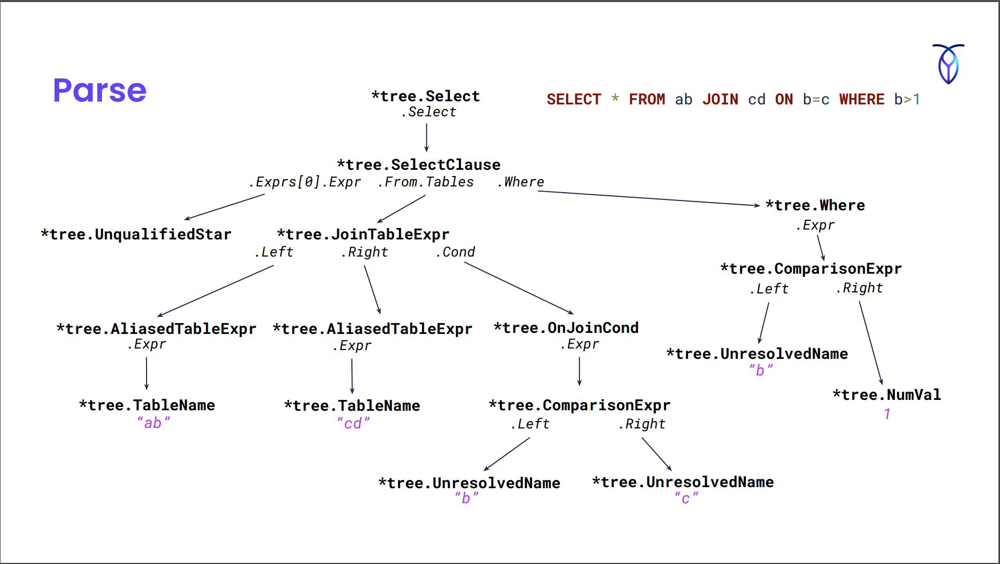
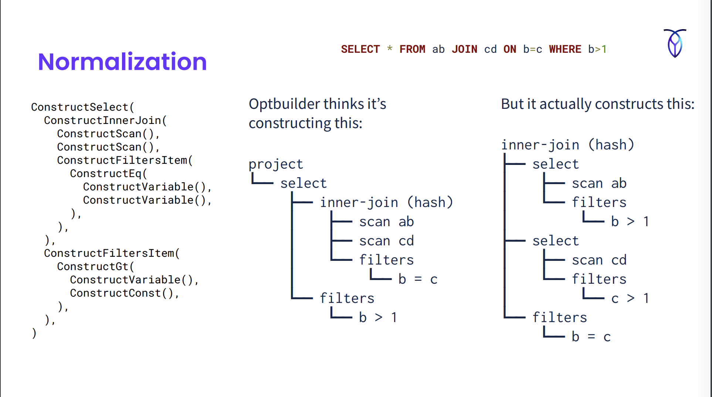
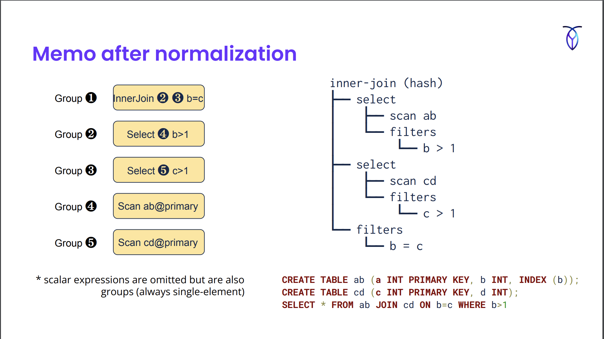
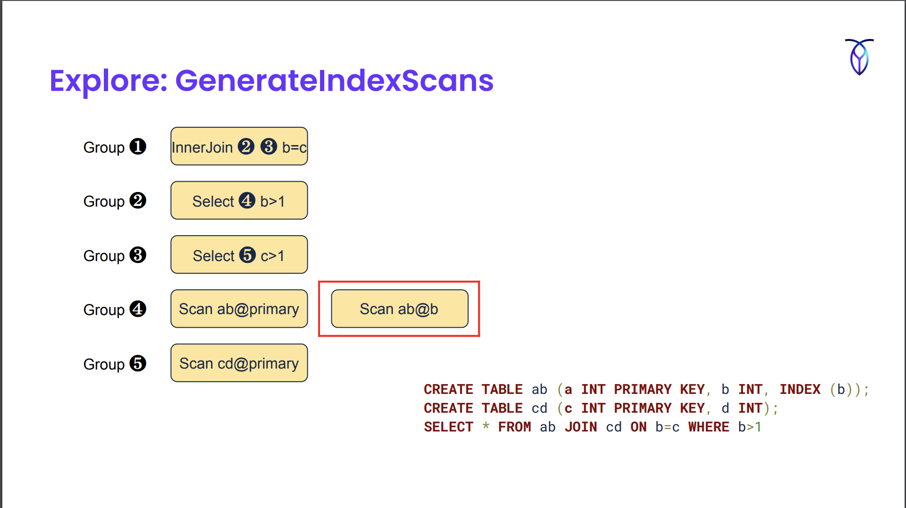
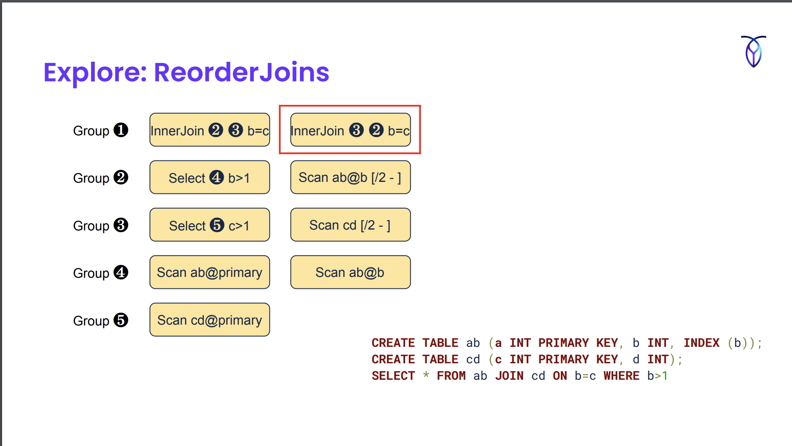
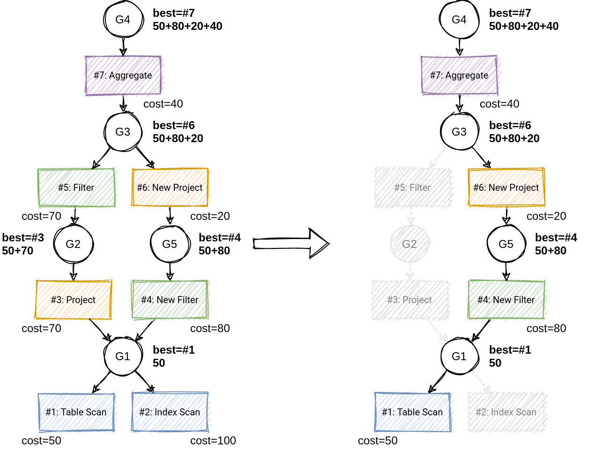
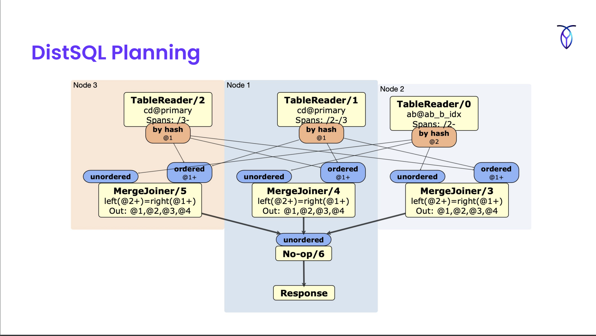

CockroachDB: Postgres-compatible Geo-Distributed SQL database
Architecture
- Shared-nothing
- Consists of distributed SQL layer on top of a distributed KV layer
This talk focuses on the SQL layer.
Query Optimization in CockroachDB
- Why not use Postgres (or some other OSS) optimizer?
- CockroachDB codebase is written in Go. pg’s optimizer is in C. Didn’t want the overhead of calling C from Go.
- Execution plans are very different in CockroachDB. A plan that performs very well on a single node may perform poorly when distributed across nodes at a large distance.
- Optimizer is key to DB performance and using other optimizer won’t let them maintain control.
- CDB’s First Optimizer
- Not really an optimizer. Used heuristics (rules) to choose execution plan.
- Eg: “if an index is available, always use it”
- Overtime rules started looking like this:
- “always use the index, except when the table is very small or we expect to scan >75% of the rows, or the index is located on a remote machine”
- This became difficult to manage.
- This kind of optimizer works for OLTP but customers were using CDB for OLAP queries too.
- Not really an optimizer. Used heuristics (rules) to choose execution plan.
- Cost-based optimizer
- Instead of applying rigid rules, considers multiple alternatives
- Assign a cost to each alternative and choose lowest cost option
- Cascade-style optimization w/ unified search
- How to generate alternatives?
- Start w/ default plan from SQL query
- Perform a series of transformations (what ?)
- Store alternatives in a compact data structure called memo
Q/A
- Do you do anything like what Postgres does where they’ve the initial cost that is a cheap approximation and then there’s a final cost if you decide to complete the rest of it OR is it a single cost model that produces a single value?
- Just a single value right now.
- Can you do cost model estimations on logical nodes or does it always has to be a physical node?
- We’ve merged the idea of logical and physical nodes. For eg: we don’t have the concept of a logical join. A logical join is just a hash join for us.
Generating alternative plans
- Phase of plan generation
- Parse -> Optbuild -> Normalize -> Explore -> DistSQL planning
- Sample Query
CREATE TABLE ab (a INT PRIMARY KEY, b INT, INDEX(b));
CREATE TABLE cd (c INT PRIMARY KEY, d INT);
SELECT * FROM ab JOIN cd ON b=c WHERE b>1;Parsing
- Parse the SQL query. Uses a yak file similar to pg.

Optbuild
- Takes AST from parser & produces the preliminary query plan.
ConstructSelect(
ConstructInnerJoin(
ConstructScan(),
ConstructScan(),
ConstructFiltersItem(
ConstructEq(
ConstructVariable(),
ConstructVariable(),
),
),
),
ConstructFiltersItem(
ConstructGt(
ConstructVariable(),
ConstructConst(),
),
),
)
- Also does semantic analysis. For eg:
- Do tables in the query actually exists and does the current user have the permission to read them?
- Do columns exist in those specific table and are they unique?
- What columns are selected by
*? - Do types match for equality comparison?
- Q/A:
- At what point do you try to bind a prepared statement value to a type?
- Happens during the optbuild phase.
- At what point do you try to bind a prepared statement value to a type?
Normalization
- Happens in parallel w/ the optbuild phase. The nested function calls are factory methods generated from a no. of defined normalization rules.
- Each of the factory functions have a bunch of normalization rules that’ll execute and modify the output and create the full normalization plan.
 - In the image, we’ve used the fact that
b=cto infer that ifb>1thenc>1and pushed the filter down below the join. - Normalization rules
- Create a logically equivalent relation expression.
- Normalization (or “rewrite”) rules are almost always good to apply.
- Eg:
- Eliminate unnecessary operation:
NOT (NOT) x -> x - Canonicalize expressions:
5 = x -> x = 5 - Constant folding:
length('abc') -> 3 - Predicate push-down
- De-correlation of subqueries
- Eliminate unnecessary operation:
DSL : Optgen
- DSL for representing normalization and exploration rules.
- Gets compiled to factory function in Go which are called in Optbuild.
- Examples
# EliminateNot discards a doubled Not operator // Comment explaining the rule
[EliminateNot, Normalize] // Header with rulename, tag
(Not (Not $input:*)) // Match rule
=>
$input // Replace expression
// ConstructNot constructs an expression for the Not operator.
func (_f *Factory) ConstructNot(input opt.ScalarExpr) opt.ScalarExpr {
// [EliminateNot]
{
_not, _ := input.(*memo.NotExpr)
if _not != nil {
input := _not.Input
if _f.matchedRule == nil || _f.matchedRule(opt.EliminateNot) {
_expr := input
return _expr
}
}
}
// ... other rules ...
e := _f.mem.MemoizeNot(input)
return _f.onConstructScalar(e)
}# MergeSelects combines two nested Select operators into a single Select that
# ANDs the filter conditions of the two Selects.
[MergeSelects, Normalize]
(Select (Select $input:* $innerFilters:*) $filters:*)
=>
(Select $input (ConcatFilters $innerFilters $filters))
// [MergeSelects]
{
_select, _ := input.(*memo.SelectExpr)
if _select != nil {
input := _select.Input
innerFilters := _select.Filters
if _f.matchedRule == nil || _f.matchedRule(opt.MergeSelects) {
_expr := _f.ConstructSelect(
input,
// DSL allows calling arbitrary Go functions (like ConcatFilters)
// defined by them
_f.funcs.ConcatFilters(innerFilters, filters),
)
return _expr
}
}
}Q/A
- How Go specific is the DSL?
- We don’t use any Go specific PL features. Can be rewritten for other languages.
Exploration
- Exploration rules may or may not produce a better plan so both alternatives are kept around unlike normalization where replacement is done.
- Same syntax as Normalize rules in the DSL with a different tag (Explore)
- Eg:
- Join reordering: A join (B join C) -> (A join B) join C
- Join algorithm (eg. hash join, merge join, lookup join)
- Index selection
Memo after normalization
- Memo stores query plan trees. It consists of a series of groups.
- They also store scalar expressions in the Memo groups but only relational expressions are shown in the image below.
- Groups can refer to other groups. Eg. Group 1 does an inner join b/w Group 2 and 3.

For exploration, you iterate through the groups and see if any exploration rules match.
GenerateIndexScans created an alternate scan in which we’re scanning the secondary index as opposed to the primary index.


Example from https://www.querifylabs.com/blog/memoization-in-cost-based-optimizers

The best plan gets passed to the next phase after cost determination.
DistSQL Planning
Takes the plan from the optimizer and extends them to whatever the cluster topology is.

Currently doesn’t take advantage of how the tables are laid out on the disk, optimizations that may involve broadcasting some data from a smaller table to another for joins etc. but planned in near future.
Choosing a Plan
- Factors that affect cost:
- Hardware configuration
- Data distribution
- Type of operators
- Performed benchmarking to understand the relative cost of different operators under the assumption that they won’t change much w/ different queries.
- This relative cost is hard-coded in the cost model.
- No. of rows processed by each operator
No. of rows processed by each operator
- Collect statistics: Row count, Distinct count, Null count, Histogram
- Multi-column stats are also collected in addition to single column stats
- Use indexes to determine what columns to collect multi-column stats on
- Eg: for index on (a, b, c), collect multi-column stats on (a,b) and (a,b,c)
- Use indexes to determine what columns to collect multi-column stats on
- Stats Collection (
CREATE STATISTICS): Full Table Scan -> Perform Sampling (size: 10K rows) ; Insert each row into HyperLogLog sketch to calculate distinct count for each column -> Aggregate Samples CREATE STATISTICSis automatically run when:- A table is created
- A new column or index is added
- ~20% of data in table has changed
- How to determine when 20% of data has changed?
- After a mutation on some node, statistic collection will be triggered based on chance
P(refresh) = no. of rows updated / (no. of rows in table * 0.20)
- Always refresh if no stats yet OR a it’s been a while since last refresh
- Each create stats run takes minutes. Full table scan can impact performance. Many table scans at once can bring down the cluster.
- To minimize performance impact
- Run
CREATE STATISTICSas a job- Guarantees only 1 stats job running at a time
- Resilient to node failures
- Use throttling to limit CPU utilization by stats job
- Run
Locality-Aware SQL Optimization
- Customers can optionally duplicate read-mostly data in each locality
- Use replication constraints to pin the copies to different geographic regions (eg. US-East, US-West, EU)
- i.e. duplicate index keys in the table similar to the primary key
- Optimizer includes locality in cost model & automatically selects index from same locality:
primary,idx_euoridx_usw
- Use replication constraints to pin the copies to different geographic regions (eg. US-East, US-West, EU)
CREATE TABLE postal_code (
id INT PRIMARY KEY,
code STRING,
INDEX idx_eu (id) STORING (code),
INDEX idx_usw (id) STORING (code),
)- Plan queries to use data from the same locality
- What’s next? (see attached slides for more info on this)
- Replace duplicated indexes w/ “global tables”
- Support geo-partitioned unique indexes
- Move DistSQL planning into optimizer
- Incorporate latency into cost model
Theory vs. Practice
Optimizing for OLTP
- When they went from the simple heuristic planner to the cost based optimizer, they had to focus a lot of minimizing overhead for simple OLTP queries (eg. primary key lookup) because even though the heuristic planner had problems, it was really fast
- Took advantage of logical properties essential for optimization
- Cardinality (different from stats)
- Functional dependencies
- Non-null columns etc.
- Took advantage of logical properties essential for optimization
- Normalization rules are really important. As of this talk they’ve 242 normalization rules & 29 exploration rules
- Foreign key checks & cascades optimized as “post queries”
- Foreign key checks (eg: value inserted in a child table that references some other parent table and needs to check whether the value exists in parent table or not) use joins which can be optimized.
- Done after the statement is executed (but hasn’t returned value yet).
Join Ordering
- v1 was shipped w/o join ordering.
- Initially implemented w/ 2 rules: CommuteJoin, AssociateJoin
- Was really inefficient.
- Reordered at most 4 tables by default.
- An intern implemented DPSUBE from “Guido Moerkotte, Pit Fender, and Marius Eich. 2013. On the correct and complete enumeration of the core search space.” and made it more efficient.
- Now it orders up to 8 tables by default.
Query Cache
- LRU cache keyed on SQL string
- Stores optimized memo
- For prepared statements w. placeholders
- Normalized memo is stored
- Placeholders are replaced during execution followed by additional normalization and exploration
Other features
- Optimizer Hints
- CockroachDB allows forcing specific index and join types as hints
- Debugging tools
EXPLAIN ANALYZE (DEBUG) ...- Generates a bundles with stats, schema, environment variables, the query plan at various verbosities
Q/A
- How do you test the optimizer? How do you test if the cost model is working correctly?
- We don’t prove that the chosen plan is the best plan. We mostly focus on testing the correctness of the plan.
- We run benchmarking regularly so that existing queries don’t regress.
- Are input parameters enough to debug everything you need?
- It’s enough for now. Once we start adding more to the cost model to make it more aware of the cluster topology and data distribution then we’d need more info.
- Do you run any kind of SQL fuzzer?
- Yes. SQLSmith. Mostly for checking if there’s any internal error.
- Manuel Rigger was testing logical correctness using SQLLancer and opened a bunch of issues.
- In general, what’s the complexity of queries you’re seeing? Cockroach isn’t like Snowflake so complex queries might be limited since they’re pushed to those systems. Are things limited to TPC-H, TPC-DS?
- Complex queries are uncommon.
- Is there any restriction on rewrite rules on the kind of complexity they’re allowed to handle? You mentioned that they can call arbitrary (programmed by them) Go functions.
- We don’t allow User-Defined functions. All functions are reviewed by some team member.